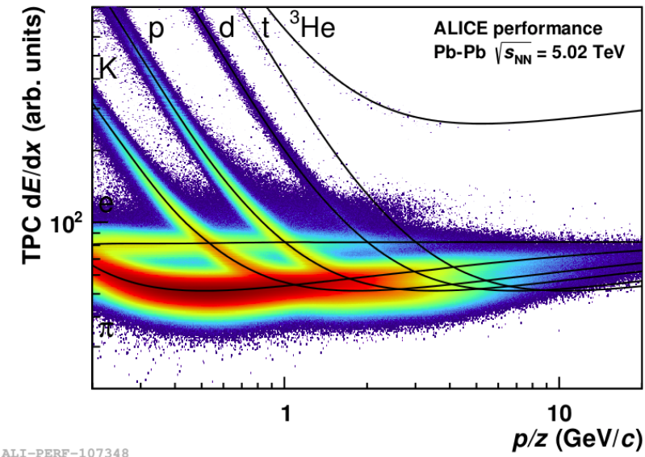

Step 5
In this section, we’ll try to identify particles, by using the amount of energy they have lost per distance traveled in the Time Projection Chamber (TPC). Some specific technical information on how to implement this in your task is given at the end of this document, but general steps to follow are explained here. First, the goals. What we want to do is
identify pions
check how ’pure’ our pion sample is
We’ll do this by looking at the TPC signal, and seeing how well this signal corresponds to the expected signal for a certain particle species. Look at the figure for clarification, you see lines (the expected signal a particle leaves in the TPC, ‘the hypothesis’) and in colors, the actual signals that were deposited.

Start by storing the TPC signals for all charged particles in your events, in a two-dimensional histogram (such as shown in the figure). First follow the ’technical steps’ from Sec. 8, and then try to make such a plot.
Hint, you can get this information by doing
fYour2DHistogram->Fill(track->P(), track->GetTPCsignal());
If your histogram is empty after running, try using Filterbit 1 rather than 128.
As a second step, you identify particles, and store only the TPC signal that corresponds to pions.
BEFORE YOU START ...
To speed things up a bit, the code that you will need for this exercise is given and explained here. It is recommended to read the entire section prior to implementing the methods.
To identify particles, you will add an additional task to your analysis, the ‘PID response’ task. This task makes sure that parametrizations that we use for e.g. specific energy loss in the TPC are loaded. To add this task to your analysis, open your runAnalysis.C macro, and add the following lines. Make sure that these lines are called before your own task is added to that analysis manager, your task will depend on this task:
// load the macro and add the task
TMacro PIDadd(gSystem->ExpandPathName("$ALICE_ROOT/ANALYSIS/macros/AddTaskPIDResponse.C"));
AliAnalysisTaskPIDResponse* PIDresponseTask = reinterpret_cast<AliAnalysisTaskPIDResponse*>(PIDadd.Exec());
the above code snippet will work under ROOT6. If you are running ROOT5, the lines to use are a bit different:
gROOT->LoadMacro("$ALICE_ROOT/ANALYSIS/macros/AddTaskPIDResponse.C");
AddTaskPIDResponse();
As a second step, you’ll have to make some changed to the header of our analysis. First, you’ll add another class member, which is a pointer to the AliPIDresponse object that we’ll use in our class. To do this, remember how you added pointers to histograms earlier in this tutorial, so add
a forward declaration of the type, i.e. ‘class AliPIDResponse’
the pointer itself, i.e. ‘AliPIDResponse* fPIDResponse; //! pid response object’
Don’t forget to add this new pointer fPIDResponse to the member initialization list in your class constructors (in the .cxx files)!
After making changes to the header, you can add the actual identification routine. This will be done in the implementation of the class. You need to go through a few steps:
Retrieve the AliPIDResponse object from the analysis manager;
make our poiter ‘fPIDResponse’ point to the AliPIDResponse object;
include the header for the AliPIDResponse class, so that the compiler knows how it is defined
The code to do this might be a bit difficult to figure out by yourself, so it’s given here below
AliAnalysisManager *man = AliAnalysisManager::GetAnalysisManager();
if (man) {
AliInputEventHandler* inputHandler = (AliInputEventHandler*)(man->GetInputEventHandler());
if (inputHandler) fPIDResponse = inputHandler->GetPIDResponse();
}
Do you understand
what happens in each line?
in which function (UserCreateOutputObjects, UserExcec, Terminate, etc) to put this code?
Now that we’ve retrieved our PID response object, it’s time to use it. To extract information for different particle species, you can use the functions
double kaonSignal = fPIDResponse->NumberOfSigmasTPC(track, AliPID::kKaon);
double pionSignal = fPIDResponse->NumberOfSigmasTPC(track, AliPID::kPion);
double protonSignal = fPIDResponse->NumberOfSigmasTPC(track, AliPID::kProton);
What these functions return you, is a probability that a particle is of a certain type, expressed in standard deviations () . To identify a particle, we’ll require that its PIDresponse signal lies withim 3 standard deviations of the expected signal. To check this, you can write a few lines such as
if (std::abs(fPIDResponse->NumberOfSigmasTPC(track, AliPID::kPion)) < 3 ) {
// jippy, i'm a pion
};
Putting what you have read in practice
Use the code snippets given in the above sections to implement your particle identification routines. If you are confident that can ’isolate’ the pions, create new histograms to store the pion’s
transverse momentum
pseudorapidity
azimuthal angle
Centrality
Most heavy-ion analyses report their results in intervals of collision centrality. In order to access collision centrality within your analysis, you will have to add yet another task to the chain of tasks that is called in your run macro. This third task also needs to be executed prior your own task (note, that the procedure for obtaining centrality for run 1 data can be different - when in doubt, ask your supervisor). The task, called AliMultSelectionTask, can be added to the manager using the following instructions:
TMacro multSelection(gSystem->ExpandPathName("$ALICE_PHYSICS/OADB/COMMON/MULTIPLICITY/macros/AddTaskMultSelection.C"));
AliMultSelectionTask* multSelectionTask = reinterpret_cast<AliMultSelectionTask*>(multSelection.Exec());
or, using the ROOT5 equivalent
gROOT->LoadMacro("$ALICE_PHYSICS/OADB/COMMON/MULTIPLICITY/macros/AddTaskMultSelection.C");
AliMultSelectionTask* multSelectionTask = AddTaskMultSelection(kFALSE);
To access centrality within your analysis task, you need to obtain a pointer to the AliMultSelection object, and obtain the collision centrality through this object, e.g. by doing
Float_t centrality(0);
AliMultSelection *multSelection =static_cast<AliMultSelection*>(fAOD->FindListObject("MultSelection"));
if(multSelection) centrality = multSelection->GetMultiplicityPercentile("V0M");
Using the above code snippets, can you select pions in 0-10% centrality, and 50-60% centrality? Does the number of pions change in the way you would expect them to change ?